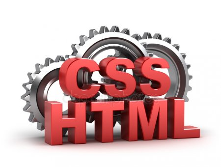

CSS is the language for describing the presentation of Web pages, including colors, layout, and fonts. It allows one to adapt the presentation to different types of devices, such as large screens, small screens, or printers.>
HTML, HyperText Markup Language, gives content structure and meaning by defining the content. HTML is used with headings, paragraphs, or images.
JavaScript is a an object-oriented computer programming language commonly used to create interactive effects within web browsers.
Python is a popular programming language. It was created by Guido van Rossum, and released in 1991. It is used for web development(server-side), software development, mathematics and system scripting.
Bootstrap, originally named Twitter Blueprint, was developed on August 19, 2011 by Mark Otto and Jacob Thornton at Twitter as a framework to encourage consistency across internal tools. Before Bootstrap, various libraries were used for interface development, which led to inconsistencies and a high maintenance burden.